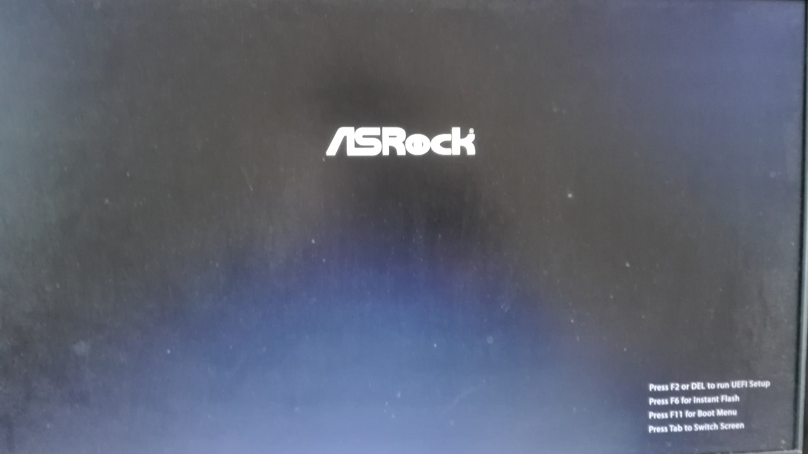

1. Phantom Valkyrie Linux¶
Phantom Valkyrie Linuxは、Linuxディストリビューションである「Ubuntu LTS版」をベースに開発した64bit OSです。
デスクトップ環境は、LXQtを採用しています。
このOSは、最新のLinuxカーネルをベースにしたカスタムカーネルを搭載しています。カスタムカーネルは、グラフィックドライバ「Mesa 19」と最新のLinux Firmwareを組み合わせる事で、高レスポンス性とハイパフォーマンスを実現しています。 Phantom Valkyrie Linuxは、「人工知能プログラムの開発環境・実行環境の提供」、「Linux・Windowsのアプリケーションの実行環境の提供」、「ソフトウェア開発・Web開発環境の提供」、「マルチメディアコンテンツ作成環境の提供」、「先端的な科学技術・データサイエンス環境の提供」、「ゲーミング環境の構築」を実施しています。
「Chromium Browser」「GIMP」「SM Player」「Sayonara Player」「Emacs」「PlayOnLinux」などの人気アプリケーションを搭載しており、デスクトップコンピューティングで行う作業をほぼカバーしてます。SSB(Specific site Browser)によって、 強力なオンラインサービスをデスクトップアプリケーションのように使う事が可能です。 オリジナルアプリケーション「Viper Tools」でシステム起動音の変更、新しいアプリケーションの追加から人工知能による自動文章構築と読み上げまでを行えます。
Phantom Valkyrie Linux is a 64bit OS which was developed based on the “Ubuntu LTS”, which is a Linux distribution.
The desktop environment of this OS has been adopted LXQt.
This OS is equipped with a custom kernel based on the latest Linux kernel.The custom kernel realize high response and high performance by combining it with the graphic driver “Mesa 19” and the latest Linux Firmware. Phantom Valkyrie Linux is carried out the “providing development environment and execution environment for artificial intelligence programs”, “providing execution environment for Linux/Windows applications”, “providing software development and web development environment”, “providing multimedia contents creation environment , “Providing cutting-edge science and technology/data science environment”,”building a gaming environment”.
It is equipped with popular application such as “Chromium Browser”,”GIMP”,”Shotcut”,”SM Player”,”Sayonara Player”,”Emacs”,”PlayOnLinux”etc. This os almost covers work to perform by desktop computing. By SSB(Specific site Browser), it can use the strong online service like desktop application. Valkyrie Super Remixed Linux can perform automatic sentence construction and reading aloud with the artificial intelligence from a change of the system startup sound, addition of new application in original application “Viper Tools”.
http://www.valkyrieviper.space/article/418075361.html
1.1. Recommended system requirements¶
- Processor :
Intel Core i7/i5/i3,Pentium G/Celeron G,SoC after Atom Z3000
AMD Ryzen,FX processor、A10/A8/A6 APU
Memory: 2GB and over
Storage: 128GB and over HDD/SSD/USB memory
Network: FTTH・ADSL・LTE・WiMAX2+ etc.
1.2. Tested Motherboard¶
B150-COMBO(ASRock)
H97I-PLUS(ASUS)
C1007UN-D(GIGABYTE)
[Tested Motherboard]
B150M COMBO(ASRock)
H97I-PLUS (ASUS)
C1007UN-D (GIGABYTE)
[Tested Stick PC(stable with wireless LAN toggle)]
STCK1A32WFC(Intel)
1.3. Based Linux destribution¶
Ubuntu 18.04 LTS
1.4. Kernel¶
◎VSRX Kernel 5.3.11-bmq53r2
◇based kernel
zen-tune kernel 5.3
◇Applied patches
- linux 5.3.11-bmq53r2 patch
- BMQ patch
- Aufs patch
- Ubuntu patch
- graysky's GCC patch
- Add-x86-zstd-kernel-compression patch
◇Optimized kernel configuration
- CPU shceduler "MuQSS"
- Default I/O scheduler -> MQ-deadline
- Meltdown,spectre_v1,spectre_v2 : Mitigation
- Processer family -> Generic X86_64
- Kernel Compression mode -> gzip
- Preemption Model -> Preemptible Kernel(Low-Latency Desktop)
- Timer frequency -> 500Hz
- Compiler optimization level -> Optimize harder
- MuQSS on
- UKSM on
- Aufs on
- Zen Interactive Tune on
- Default CPUFreq Governor -> ondemand
- HD-audio pre-allocated buffer size 4096
- Delete most items of Kernel Hacking
- BBR TCP Congestion Control
- Built on the GCC 8.3
1.5. PPA¶
Ubuntu PPA
PPSSPP PPA
Avidemux PPA
Atom PPA
BootRepair PPA
Docker PPA
Wine HQ PPA
GIMP PPA
OBS Studio PPA
1.6. デスクトップ環境¶
LXQt
1.7. プログラミング言語及びスクリプト言語、コンパイラ¶
GCC8.3
LLVM 8.0
Python 3.6.8/2.7.15
PHP 7.2.17
Perl 5.26.1
Lua 5.3.3
1.8. 収録ソフトウェア¶
○Linuxアプリ:
ファームウェア：Linux Firmware 1.173.10
ウィンドウマネージャー：Openbox
パネル：Tint2
サウンドサーバ:Jack Audio Connection Kit,Pulse Audio
ディスプレイマネージャー：LightDM
コマンドランチャー：gmrun
ランチャー:Plank
ファイルマネージャー：PCManFM-Qt
ネットワーク管理：network-manager-gnome
電源管理：xfce4-powermanager
システムモニター：xfce4-taskmanager
ターミナル:xfce4-terminal
Openboxメニュー管理：obmenu
Openbox設定マネージャー：obconf-qt
音量制御： gnome-alsamixer
コンポジット制御：compton
文字入力：Fcitx+Mozc
スクリーンショットツール:gnome screenshooter
システム通知:dunst
フォント : IPAフォント,Cicaなど
Webブラウザ:Chromium Browser 78
フォトレタッチソフト:GIMP 2.8.22
テキストエディタ:Emacs nox 25.2.2,Leafpad
動画編集ソフト:Avidemux 2.7.4,Shotcut 19.07.15
音楽プレーヤー:Sayonara Player 1.5.1
オフィスツール:Abiword 3.0.2,Gnumeric 1.12.35
動画プレーヤー:SMPlayer 19.5.0
SSH:OpenSSH
LiveUSB作成:UNetbootin
Webサーバ:Apache 2.4.29
日本語入力環境:Mozc,fcitx
ゲームエミュレーター:PCSX2 1.4.0(with plugins for PCSX2 1.5.0)、PPSSPP 1.7.0、Mednafen、Kega Fusion、Yabause
Windowsアプリ実行環境:Wine 4.0.2,PlayOnLinux 4.2.12
ライディングソフト:xfburn 0.5.5
合成音声ソフト:OpenJtalk
Windowsの圧縮ファイル対応アーカイバ:unar
PDFビューア:evince 3.28.2
音声編集ソフトウェア:Audacity 2.2.2
grub修復ツール:Boot Repair
ドキュメント作成ツール:Sphinx 1.6.7
キャッシュアプリケーション:preload,prelink
CDリッパー:Asunder CD Ripper 2.9.2
Cコンパイル高速化ツール:ccache 3.4.1
APNG生成 : apngasm 2.7
APNGからAGIFに変換 : apng2gif
Live USB作成ツール : UNetbootin
ディスクパーティション管理ツール : GNOME Disks
動画配信ツール：OBS Studio
分散コンパイラ：distcc
並列コンピューティングAPI：OpenCV
オーディオAPI:OpenAL
○オリジナルアプリ:
Python製アプリケーション:Viper Tools
◯Webアプリ:
Gmail
Google Drive
Cups Browser
Google Calendar
Install Android Studio
Install Processing
Install Eclipse
Install Jdownloader2
Add Ubuntu PPAs
DP-IP
Animizer
JSNES
Wifu2x
Insecam
IP hiroba
Youtube
Google Maps
Google translation
BROARDBAND Speedtest
Animizer
Wifu2x
Office Online
TVer
JRA
chihou_keiba live
BOATRACE
MSI電源容量計算機
○オプション 人工知能の開発環境「Brunhild」
Python用機械学習ライブラリ:scikit learn,CPU版Tensor Flow,Keras
○キーボードショートカット:
・Shift+Alt+Left - 現在のウィンドウを左隣の仮想デスクトップに移動
・Shift+Alt+Right - 現在のウィンドウを右隣の仮想デスクトップに移動
・Windowsキー+1 - 仮想デスクトップ1に移動
・Windowsキー+2 - 仮想デスクトップ2に移動
・Windowsキー+3 - 仮想デスクトップ3に移動
・Windowsキー+4 - 仮想デスクトップ4に移動
・Windowsキー+5 - 仮想デスクトップ5に移動
・Windowsキー+6 - 仮想デスクトップ6に移動
・Windowsキー+d - 現在開いているウィンドウを全てタスクバーに収納、あるいは展開する
・Windowsキー+Shift+c - 現在アクティブなウィンドウを閉じる
・Windowsキー+Escape - 最も下のレイヤーにあるウィンドウを最上位に移動
・Windowsキー+space - ウィンドウメニューの表示
・Windowsキー+f - fbpanel再起動
・Print - スクリーンショットの撮影
・Alt+Print - アクティブウィンドウのスクリーンショットの撮影
・Windowsキー+k - 次のウィンドウに移動
・Windowsキー+j - 前のウィンドウに戻る
・Ctrl+m - Openboxのルートメニューを表示
・Ctrl+Alt+Return - ウィンドウを最大化
・Ctrl+Alt+Shift+Return - ウィンドウを最小化
・Ctrl+Windows+u - 音量を上げる
・Ctrl+Windows+i - 音量を下げる
・Ctrl+space - コマンドランチャー「gmrun」起動
・Windowsキー+Return - 端末を起動
・Windowsキー+c - Chromiumの起動
・Windowsキー+p - PCManFMの起動
・Windowsキー+a - Audaciousの起動
・Windowsキー+e - Emacs noxの起動
2. インストール方法¶
◇インストール方法 1.ISOをダウンロード（OneDriveのアカウントが無くてもダウンロードは出来ます。右クリックメニューで「ダウンロード」の項目を選択して下さい。）
2.UNetbootinでUSBメモリーにインストールディスク(Live USB)を作成。
3.Live USBをパソコンのUSBポートに挿入して、UEFIからLive USBで起動出来るように、USBメモリーから起動出来るようにする。（メーカーロゴが出ている時にF11キーなどを押す。）
4.Live USBでシステムを起動。余計な物をインストールしないようにし、高速にインストールする為にネットを切っておく。トラブルを防止出来ます。
5.右クリック→「Install PVL」→インストール
6.OSのインストールが終わった後に出てくるダイアログで「試用を続ける」を選択する。選択後に自動的にboot-repairが起動。
7.「高度なオプション」→「GRUBのオプション」→「SecureBoot」のチェックを外して、適用ボタンを押す。
8.GRUBをインストールしたら、システムの再起動（エラーが出ていてもGrub2はインストールされているので問題無く起動出来ます。）。 homeディレクトリを別にした状態で、再インストールをしている時は、/etc/skelの下にあるファイルやフォルダを全てユーザーディレクトリにコピーしなければ反映されません。
3. セキュアブートの無効化¶
1.パソコンを起動させた時にメーカーのロゴが表示されるので、この時にF2キーかDeleteキーを押す。
2.UEFIに入るので、詳細モードに変更する。（使っているマザーボードによって異なります。）

3.セキュリティ関連の項目にセキュアブートの設定項目があるので、これを選びます。

4.保存して再起動させると、セキュアブートが無効化されてシステムを起動する事が出来ます。
4. 64bit OS「Phantom Valkyrie Linux」の特長¶
デスクトップ環境は、LXQtを採用しています。
デスクトップ環境がLXQtを採用していて、ウィンドウマネージャーはOpenboxです。デスクトップ環境のXfceなどから様々なアプリケーションを使っています。また、fbpanelやgmrunやnitrogenもデスクトップの構築に使っています。
メモリー使用量を減らす事で、アプリケーションを使う時に必要なメモリーをより多く確保する事が出来ます。
Linuxカーネルは、最新のLinuxカーネルベースの高レスポンス性が高いカスタムカーネルを搭載。
Mesa 19の導入により、WineやPCSX2などで3Dゲームを動作させた時のパフォーマンスが大幅に向上しています。
VDAPU及びVAAPI対応ドライバを採用している為、動画支援機能で低CPU負荷で動画を再生出来ます。
サウンドは、PulseAudioとJack Audio Connection Kitをプラグイン経由で出力する仕組みになっています。
また、Openboxの右クリックメニューからPulseAudioやJack Audio Connection Kitを起動・停止させられ、両方のサウンドサーバの併用も可能です。
Pythonとシェルスクリプトで開発したオリジナルアプリケーション「Viper Tools」を搭載。
リマスター機能やカスタムカーネルビルド機能、アプリケーションのインストール、人工知能プログラムによる文書作成と音読、宝くじなどの予想機能、画像・動画の変換機能などを有しています。
Ubuntuの長期サポート版（LTS）のリポジトリと共有していますので、Main,RestrictedのコンポーネントをUbuntuの公式サポートで最新の状態に維持しています。更にPPAから最新のバージョンのアプリケーションを導入しています。
Specific Site Browser機能で人気のWebアプリケーションをデスクトップアプリケーションのように使えます。
PSPやPS2やPSのゲームエミュレーション、PlayOnLinux+Wineによる古いWindowsアプリケーションの利用が可能です。
GIMPやAvidemuxやHandbrakeなどWindowsやLinuxなどでお馴染みのアプリケーションをフル装備しています。最初からプログラミング・オフィス文書作成・イラストレーション・画像編集・動画エンコード・動画編集・音楽再生・3Dモデリング・オンラインサービスの利用する事が可能です。
UEFIモードでLiveUSBやハードディスクへのフルインストールでの起動が出来るようになっていますので、ほとんどのマザーボードに対応
WebブラウザにはChromium Browser、WebサーバのApacheなどを装備し、Web開発環境を整えています。
Atom、EmacsやLeafpadなど複数のテキストエディタを搭載し、PythonやPHPやJavaなどのプログラミング言語でプログラミングを行える環境を整えています。
メインサイトとの連携
日本語入力環境にMoscとFcitxを採用
5. Phantom Valkyrie Linuxの高速化と最適化¶
64bit OS「Phantom Valkyrie Linux」は、LTS版Ubuntuをベースに数多くの高速化・最適化策を講じています。
Ubuntu LTSをベースにして開発したオリジナル64bit OS「Phantom Valkyrie Linux」には、様々な高速化テクニックを導入しています。
1.Ubuntuパッチが当たっているLinuxカーネルのソースコードを使って、最適化ビルドしたカスタムカーネルの導入
Linuxカーネルを更に最適化する
64bit OS「VSRX-19」用のカスタムカーネルを作成
2.デスクトップ環境をOpenbox+fbpanel+Xfce/LXDE/GNOME用アプリで構成
3.prelink、preloadでアプリケーションのキャッシュデータを使って先読み
4.tmpfsでRAMDiskをブラウザのキャッシュ場所として活用
5./etc/sysctl.confの最適化
6.サウンドシステムは、サウンドサーバを通さずに、ALSAを直接使えるようにしています。
サウンドサーバが必要な場合には、「PulseAudio」「Jack Audio Connection Kit」をウィンドウマネージャー「Openbox」の右クリックメニューから手動で起動出来るようにしました。
7./etc/init.d/rcに「CONCURRENCY=shell」を設定して、システム起動時のモジュールの並列起動
8.VAAPIとVDPAUの導入で動画支援機能の利用(mesa-va-drivers、mesa-vdpau-drivers)
9.ccacheでGCCによるコンパイルの高速化
10.Emacsをnox版で使う
11.CPUスケジューラーにMuQSSを適用してカーネルをビルドした時、パフォーマンス向上させる設定として、以下を/etc/sysctl.confに追加。
kernel.yield_type = 2
kernel.interactive = 0
6. Phantom Valkyrie Linuxの高音質化¶
PulseAudioとJACK Audio Connection Kitをモジュールで接続し、Openboxの起動スクリプトからこれらを起動させたり、PulseAudioのデーモンをRAMDISKに配置したりして高音質化を図っています。
高音質化部分は以下の通りです。:
#JACK+PulseAudio
sleep 5;jack_control start &
sudo schedtool -R -p 49 `pidof jackdbus`
jack_control eps realtime true
jack_control ds alsa
jack_control dps device hw:0
jack_control dps rate 96000
jack_control dps nperiods 2
jack_control dps period 1024
sleep 5;pactl load-module module-jack-sink channels=2
pactl load-module module-jack-source channels=2
sleep 3;pacmd set-default-sink jack_out
pacmd set-default-source jack_in
sleep 2;ln -s /usr/bin/pulseaudio /tmp &
sleep 10;/tmp/pulseaudio --start &
7. Phantom Valkyrie Linuxのインストールの時にGRUBをインストールするのに失敗した場合の対処法¶
EFIパーティションの状況によって、システムインストール時にGRUBが正常にインストールされない事があります。 その時には、Phantom Valkyrie Linuxに収録しているboot-repairを使ってGRUBをインストールする事が出来ます。:
1.右クリックメニューでboot-repairを選択します。
2.boot-repairが起動したら、「高度なオプション」を選択し、適用を押します。
3.GRUBのインストールが行われます。最後に正常にインストール出来なかったという内容のメッセージが表示されますが、そのまま、システムを再起動させます。
4.正常にシステムが起動出来るようになっています。